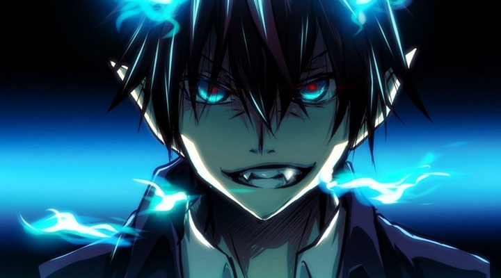

Por Matheus Moura
Ao no exorcist /Maio
Blue Exorcist (青の祓魔師, Ao no Ekusoshisuto?, lit.: "Exorcista Azul"), também conhecido como Ao no Exorcist, é uma série de mangá escrita e ilustrada por Katou Kazue. O mangá é serializado na revista mensal Jump Square da editora Shueisha desde abril de 2009, com os capítulos individuais compilados em 17 volumes tankōbon a partir de 4 de julho de 2016.[1] A história gira em torno de Rin Okumura, um adolescente que descobre que ele é o filho de Satã ( Satanás ) nascido de uma mulher humana e é o herdeiro dos poderes de Satã. Quando Satã mata o guardião de Rin, Rin deci-
de se tornar um exorcista para derrotar seu pai.
A série recebeu uma adaptação em uma série de anime pelo estúdio A-1 Pictures em 2011 e adaptado em um filme de anime em dezembro de 2012.